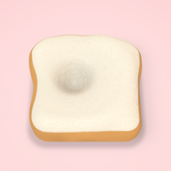

SQUISH LAB
押して、のばして、ゆっくり戻る
どんなアプリ？
食べ物そっくりのスクイーズを、指で押したり、2本指でのばしたりして遊ぶ iPhone アプリです。 押した所だけがじわっと沈み、指を離すとゆっくり戻ります。振動と音も、さわり方に合わせて変わります。
- 焼き餅・大福・プリン・メロンパン・お寿司など、いろいろなスクイーズ
- ろう加工のスクイーズは、押すとパキパキ割れて、かけらが落ちる
- かたち・あじ・かお・ラメ・なまえを選んで、自分だけのスクイーズを作れる
- 指でなぞってラメをふりかけ
- ガチャで集める（出る確率はアプリ内でいつでも見られます）